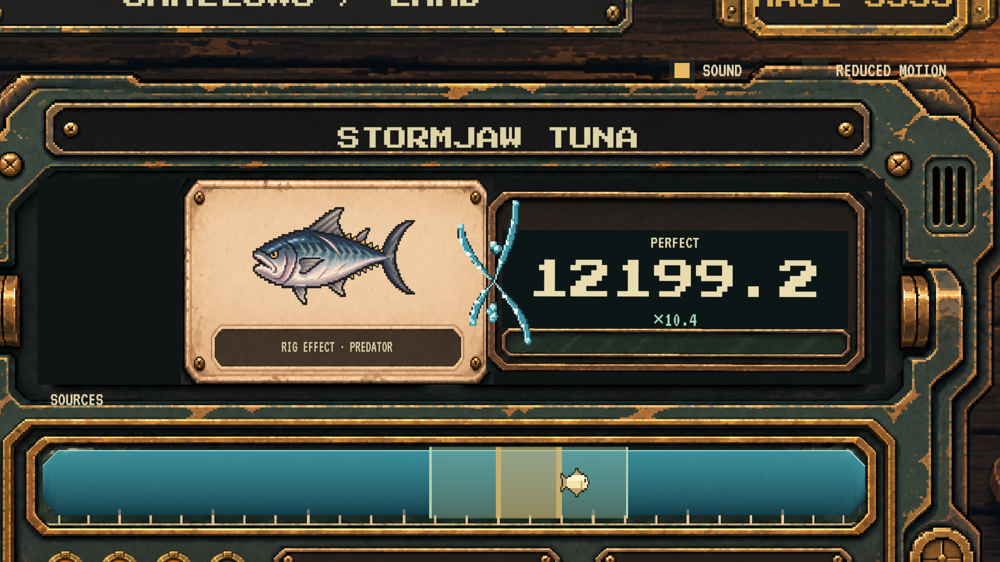
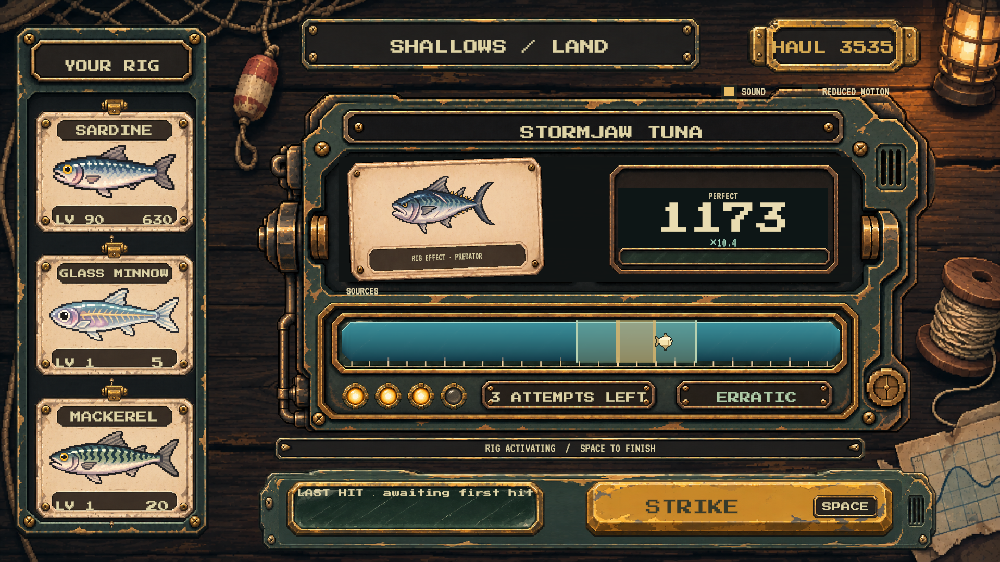
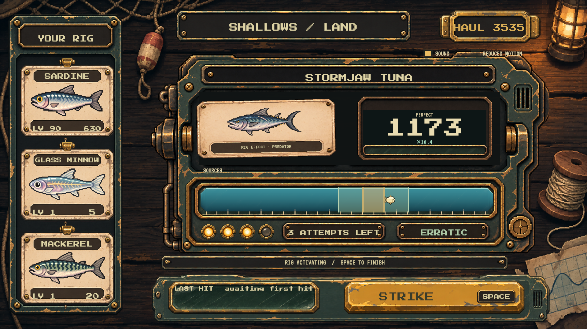

Clean edges through every impact
The creature and score panels now have independent artwork silhouettes. Their size, placement and motion paths are preserved; the rectangular cabinet pixels no longer travel with them. The final major hit slows just before contact and lingers through the first rebound.
Updated native combo
12,199.2 points · normal launch · slow final approach · close-up and lingering contact/rebound · normal recovery. Enable sound with the video controls.
Before — rectangular machine crop

After — separate silhouettes

Windup

Dash
316 native frames at 60 fps. Artwork and validation details.